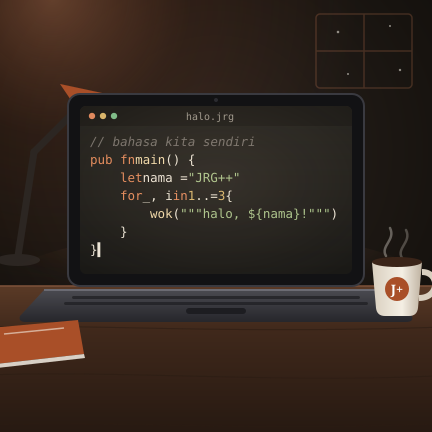

Pembuat JawaRustGo++
Muhamad Surya Widianto
Mahasiswa Manajemen Bisnis Telekomunikasi dan Informatika
Fakultas Ekonomi dan Bisnis, Telkom University
Bogor, Jawa Barat
Tentang
Saya mahasiswa Manajemen Bisnis Telekomunikasi dan Informatika di Telkom University, berasal dari Bogor. Saya senang membongkar cara kerja sesuatu, dari perangkat lunak sampai cara bisnis modern berjalan, lalu mencoba membangunnya sendiri.
Di luar kuliah, sebagian besar waktu saya habis untuk menulis kode. JawaRustGo++ adalah hasil terbesarnya sejauh ini.
Proyek
JawaRustGo++ (JRG)
Bahasa pemrograman dengan pesan galat berbahasa Indonesia, ditulis dengan Rust. Satu program bisa dijalankan
lewat interpreter, mesin virtual bytecode, atau dikompilasi jadi program native lewat LLVM. Dilengkapi pengelola
proyek jrgm, pustaka standar, FFI ke dua belas bahasa, pembungkus aplikasi Android, JRG IDE, dan kelas
Matematika × JRG.
Minat
- Bahasa pemrograman dan sistemMerancang tata bahasa, kompilator, dan perkakas pengembang.
- Bisnis dan teknologi digitalBagaimana teknologi dipakai untuk menjalankan dan mengembangkan usaha.
- Analisis dataMembaca data untuk mengambil keputusan.
- Pemasaran digitalStrategi menjangkau orang lewat kanal digital.
Pengalaman
- Merancang dan membangun JawaRustGo++Dari tata bahasa dan pengurai sampai tiga mesin eksekusi, pustaka standar, dan perkakasnya, dikerjakan sendiri.
- Menyusun strategi investigasiIkut menyusun rencana penyelidikan atas dugaan penipuan di sektor pertambangan bersama beberapa ahli.
Kontak
Untuk pertanyaan, kerja sama, atau laporan tentang JRG:
- LinkedIn: Muhamad Surya Widianto
- Email: muhamadsuryawidianto421@gmail.com
- Bug dan saran untuk JRG: GitHub Issues